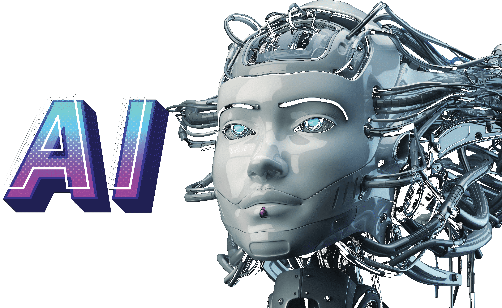

AI для підприємця

За останні роки спостерігається значний ріст інтересу до курсів з управління бізнесом та стратегій, спрямованих на використання штучного інтелекту (AI) у Udemy. Підприємці та менеджери шукають нові можливості для оптимізації своїх операцій, прийняття обґрунтованих рішень та підвищення конкурентоспроможності своїх підприємств. Цей ріст популярності обумовлений не лише прагненням до використання AI для покращення управлінських процесів, але й необхідністю в оволодінні навичками з автоматизації та оптимізації бізнес-процесів за допомогою цих технологій. Підприємці шукають ефективні методи автоматизації, спрямовані на збільшення ефективності їхніх операцій. Окрім того, відзначається популярність курсів, які спрямовані на розробку і впровадження інноваційних продуктів та послуг, базованих на штучному інтелекті. Підприємці розуміють потенціал AI як інструменту для створення конкурентних переваг і активно навчаються використовувати його в процесі розробки та впровадження новаторських ідей. Отже, трендові курси Udemy поєднують у собі аспекти управління бізнесом, оптимізації бізнес-процесів та розробки інновацій, ставлячи перед підприємцями завдання оволодіти необхідними навичками для успішного використання штучного інтелекту у своїй діяльності.
AI для маркетингу

Засвоєння навичок націлювання та персоналізації у маркетингу стає критично важливим завданням для фахівців у галузі. Udemy, спрямовані на використання штучного інтелекту для точного націлювання та персоналізації рекламних кампаній, надають практичні інструменти для ефективного взаємодії з аудиторією. Оптимізація та підвищення ефективності рекламних кампаній за системою pay-per-click також виявляється ключовою областю удосконалення маркетингових стратегій. Курси, які дозволяють фахівцям здобути практичні навички використання штучного інтелекту для автоматизації управління рекламними бюджетами, є вельми цінними для їхнього успіху. Додатково, розвиток навичок у сфері AI-копірайтингу стає необхідною складовою для досягнення високої якості текстів та рекламних матеріалів. Навчання використанню штучного інтелекту для копірайтингу допомагає маркетологам підняти планку їхніх творчих вирішень і стає вагомим фактором в їхніх маркетингових стратегіях. Такий комплексний підхід дозволяє фахівцям з маркетингу збагачувати свої навички, використовуючи потужність штучного інтелекту для досягнення оптимальних результатів у своїх кампаніях.
AI для продажу
Курси Udemy з використання штучного інтелекту для оптимізації процесів продажу набули великої популярності серед фахівців у сфері продажів. Зосереджені на автоматизації, відслідковуванні та прогнозуванні попиту, вони допомагають підвищити ефективність та результативність комерційної діяльності. Крім того, курси, спрямовані на розвиток навичок використання штучного інтелекту для персоналізації комунікації з клієнтами, отримують широкий визнання. За допомогою індивідуалізованих підходів до ведення бізнесу, фахівці в продажах можуть покращити взаємодію з клієнтами та досягти збільшення обсягу продажів. Також важливим напрямком стають курси, які вчать використовувати штучний інтелект для аналізу та прогнозування продажів. Ці навички корисні як для фахівців у сфері продажу, так і для бізнес-аналітиків. Здійснений аналіз даних та точне прогнозування допомагають оптимізувати стратегії продажу та управління запасами, забезпечуючи більш ефективне планування та вирішення бізнес-завдань.
Обрав напрямок онлайн-школи Udemy, оскільки це єдиний із трьох сервісів, які я взагалі бачив, та з якими зіткнувся на YouTube, де є класні ментори, що створюють безкоштовні курси.
